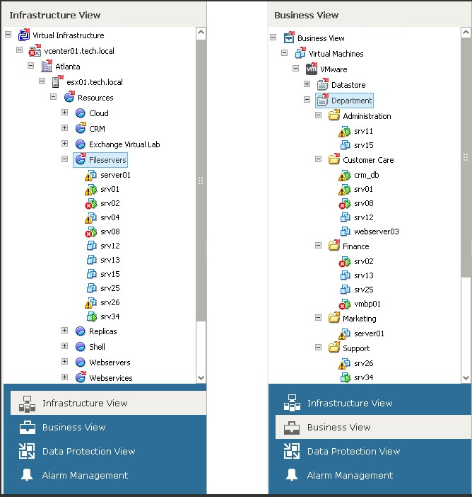

（1）24x7 性能监控和预警
Veeam ONE 能够 24x7 实时、无代理、无人值守地监控您的备份和虚拟基础架构，在备份和性能问题对应用程序和用户造成负面影响之前通知您。监控功能包括：
§ 实时仪表板，一键即可展开细节视图
§ 超过 200 个基于最佳实践的预设警报
§ 内容丰富的知识库，为每个警报提供详细解释
§ 提供详细信息，帮助您找出问题根源并迅速解决问题
§ 特定警报仪表板，用于缩短恢复和故障排除时间
§ 备份基础架构性能与趋势仪表板
§ 任何资源消耗大户仪表板
您也可以自定义仪表板，以满足您的特殊需求。例如，您可以获取特定集群或业务单元的粒度报告并监控其性能、预警、备份状态和资源消耗最高的虚拟机。
（2）性能和配置评估
您真的了解在任何给定时刻您的 VMware 或 Hyper-V 环境中发生的一切吗？是否能够应对负载高峰？跟踪资源分配和消耗是保持 IT 服务可用性的关键。Veeam ONE 可帮助您评估性能和配置，让您能够识别：
§ 资源消耗大户以及哪些主机的负载最少
§ 数据存储的实时和累积 I/O 负载及延迟
§ 数据存储延迟和 IOP 是否可以承受增加的备份负载
§ 主机、集群、资源池和数据存储的资源消耗数据
§ 由于配置不受支持（例如带有 pRDM 的虚拟机或 VMware 中的独立磁盘）导致无法保护虚拟机
§ 存储使用过量及更多问题！
（3）备份基础架构报告
可用性取决于备份基础架构的健康状况和性能。Veeam ONE 提供一组专门设计的评估报告，用以确保：所有虚拟机的配置均受支持，所有虚拟机均被备份作业处理，备份按计划运行并且存储目标存在足以支持您的保留策略的空间。提供特殊的评估报告，确保您的 Veeam Backup & Replication 安装符合所有已知最佳实践。以下是备份报告的部分内容：
§ 备份基础架构评估
§ Veeam 内置广域网加速带来的性能和带宽节省
§ 审核操作员还原活动
§ 备份和复制作业的状态
§ 未纳入任何备份作业、不受保护的虚拟机
§ 备份作业配置的变更跟踪以及其他 20 种报告！
（4）针对 VMware、Hyper-V 和备份的容量规划
Veeam ONE 使用历史统计数据提供针对 VMware vSphere、Microsoft Hyper-V 和备份基础架构的性能预测和容量规划。通过“what if”建模可以预测资源使用情况和利用率趋势，跟踪备份和虚拟基础架构过度使用资源的情况。
是否有可能再增加三台 SQL Server 服务器并让两台主机下线进行维护？Veeam ONE 可提供预测的数据，让您不用再猜测容量规划。现在，您可以管理多个部署项目，计划硬件升级和服务器停机时间，并深信您的环境能够应对这些计划。借助 Veeam ONE，您可以：
§ 根据消耗趋势了解计算或存储资源何时消耗殆尽
§ 了解备份存储库何时由于执行已配置的备份作业而耗尽空间
§ 模拟添加新虚拟机、主机、计算或存储资源后的资源可用性
§ 计划对 VMware 和 Hyper-V 同时进行异构扩容和更换
§ 考虑多个容量规划项目并预留资源
§ 消除人为判断以及基于 Excel 的手工计算操作
（5）对于服务提供商：增强监控和报告功能
托管服务提供商 (MSP) 和 Veeam Cloud & Service Provider (VCSP) 可以利用多租户报告和配置全面透视每个客户环境的资源消耗情况：
§ 为备份即服务的客户提供计费结构
§ 为 vCloud Director 基础架构和上下文提供报告和监控
§ 通过为客户（租户）提供自助监控和报告功能，改善您的服务
§ 利用 SSO 和本地 vSphere / vCD 用户提供性能数据
Veeam ONE 帮助 MSP 工作更灵巧，而不是更吃力，同时还通过消除有时可能导致意外数据曝光的手工报告功能，负责任地保障租户数据的安全。
（6）原始数据分析和高级报告自定义
有时，您只需要利用原始数据进行分析。借助于 Veeam ONE，您可以轻松访问 vSphere 和 Hyper-V 的原始性能数据并自定义基础架构报告，包括特定 CPU、内存、网络和磁盘的性能指标。
Veeam ONE 允许您定义自己的配置参数、性能指标和筛选器，提供最高的灵活性。为了轻松生成报告，Veeam ONE 的自定义报告生成器允许您将任何现有报告中的任何字段的数据放入一个全包含的文档中，从而提供您所需的全面透视功能。
变更跟踪和审核
您的备份和虚拟基础架构包含许多可移动的部件并由一支完整的团队管理，因此，您需要密切控制谁在发出配置预警，谁在添加新对象。变化是动态的，最终会影响虚拟机、备份作业和虚拟机监控程序自身的性能。
Veeam ONE 提供自动备份和 VMware 变更跟踪功能，从而让变更审核和取证分析变得完全透明。
（7）提供基础架构的业务视图和技术视图
Veeam ONE 能提供虚拟基础架构的技术视图和业务视图。您可以对动态生成的主机、集群、虚拟机和存储设备组进行监控并生成相关报告，还可按以下标准进行分类：
§ 业务单元
§ 地理位置
§ 部门
§ 服务水平
§ 服务器类型
§ 任何其他已定义标准

（8）识别每个未受到保护的虚拟机
您是否受到全面保护？Veeam ONE 可以帮助您降低停机风险。通过根据还原点对虚拟机进行分类并据此特别定义备份业务组，Veeam ONE 可以帮助您轻松判断哪些虚拟机受到保护，哪些未受到保护。这为用户节省了宝贵的时间，确保所有关键虚拟机均得到正确的备份并且始终可用。
（9）获得虚拟环境的业务视图并遏制虚拟机蔓延
Veeam ONE 能够以自动、灵活和动态的方式，按照诸如业务单元、部门、目的和服务水平协议等标准对集群、主机、虚拟机及数据存储进行分类和分组。利用 Veeam ONE 业务分类功能，您便可以根据组织的需求和优先级来查看和管理虚拟基础架构。您还可以监控和报告逻辑对象组的资源使用情况，查看哪些对象不符合您的分类标准，让您能够轻松检测虚拟机蔓延情形。